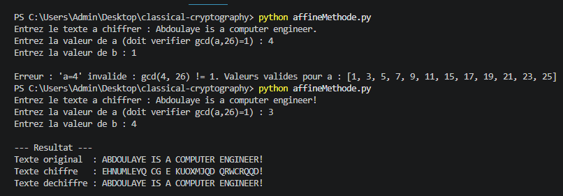

César
Chiffrement par décalage des caractères de l'alphabet.
Cryptographie
Implémentation et expérimentation de plusieurs techniques classiques de chiffrement et de déchiffrement.

Le projet explore plusieurs méthodes de cryptographie classique afin de comprendre leurs mécanismes, leurs paramètres et leurs limites.
Algorithmes
Chiffrement par décalage des caractères de l'alphabet.
Chiffrement polyalphabétique reposant sur une clé.
Transformation mathématique des caractères selon une fonction affine.
Chiffrement par blocs utilisant des opérations matricielles.
Expérimentation
Le projet permet également d'expérimenter des enchaînements de méthodes de chiffrement afin d'observer comment plusieurs transformations peuvent être combinées.
L'objectif principal est pédagogique : comprendre les opérations mathématiques et algorithmiques derrière les mécanismes de chiffrement plutôt que de proposer une solution cryptographique moderne destinée à sécuriser des données réelles.
Explorer
Découvrez les autres réalisations du portfolio.